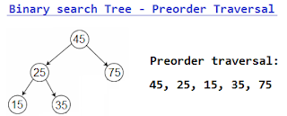
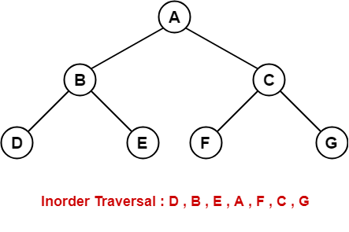
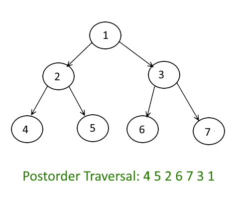

Tree Traversals
Tree reversal or tree mirroring is the process of swapping the left and right subtrees of a binary tree. This can be done recursively on each subtree until the entire tree is mirrored. After tree reversal, the resulting tree is a mirror image of the original tree, with all the left and right subtrees swapped.
- Pre-order, in-order, and post-order traversal are three types of depth-first traversal of a binary tree.
- Pre-order traversal: In pre-order traversal, we visit the root node first, then the left subtree, and then the right subtree. So the order of visiting the nodes in pre-order traversal is: Root -> Left Subtree -> Right Subtree. This traversal is used for copying the tree.

- In-order traversal: In in-order traversal, we visit the left subtree first, then the root node, and then the right subtree. So the order of visiting the nodes in in-order traversal is: Left Subtree -> Root -> Right Subtree. This traversal is used for representing the tree in alphabetical order/from least to greatest.

- Post-order traversal: In post-order traversal, we visit the left subtree first, then the right subtree, and then the root node. So the order of visiting the nodes in post-order traversal is: Left Subtree -> Right Subtree -> Root. This traversal is used for deleting the tree.

These traversal techniques are useful in different applications, such as searching a tree, creating a copy of a tree, and evaluating expressions represented as trees.